Actual public GraphShell at deployed SHA 6b89fe55404228658c785329ff8433ebfc3e24c2. PR #361 hides the floating bar; #362 reserves a 44px layout selector inside the mobile drawer header. Both mobile engines pass pointer hits in the formerly covered rows, clickable tabs, selected-Event/camera continuity through mode switches, Current with drawer open, and bar restoration after close. Desktop regression passed. Physical iPhone/PWA remains untested.
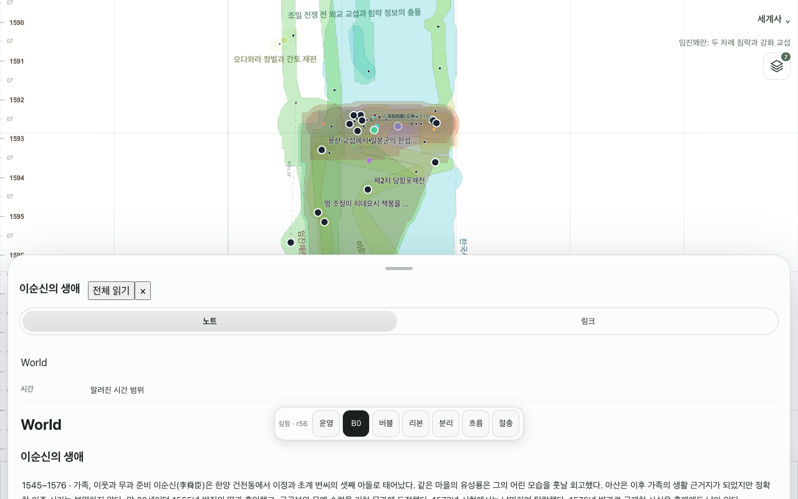
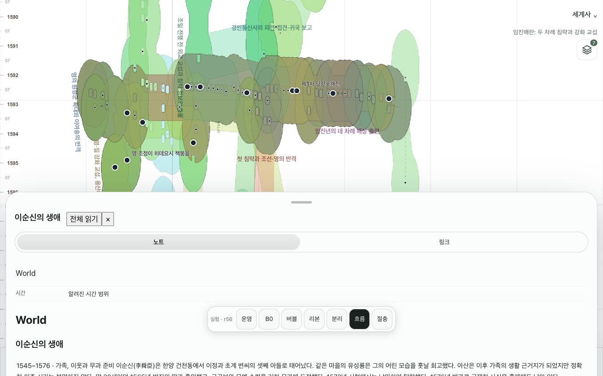
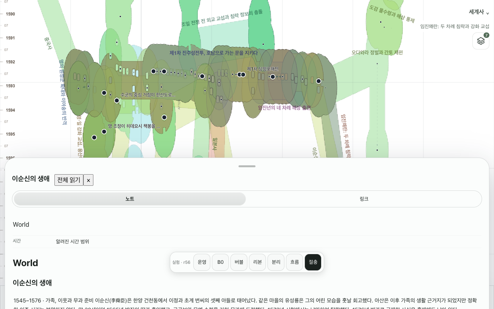
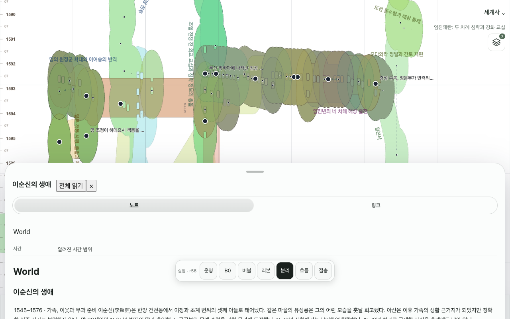
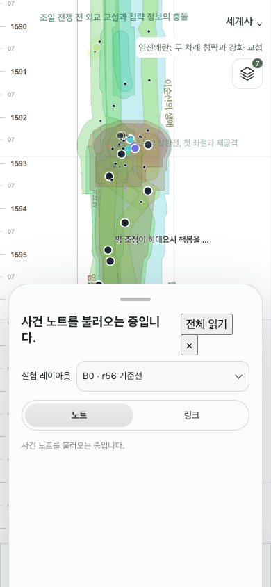
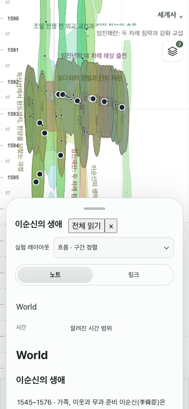
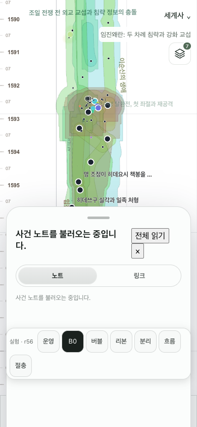
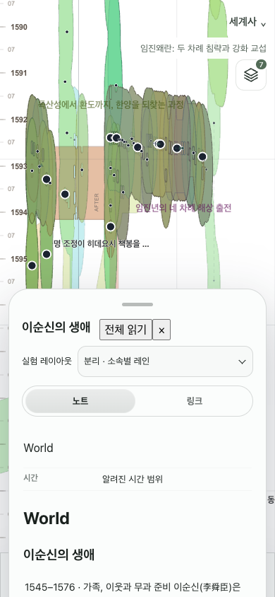
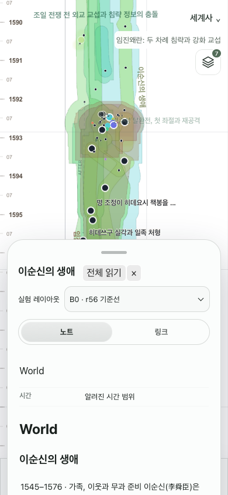
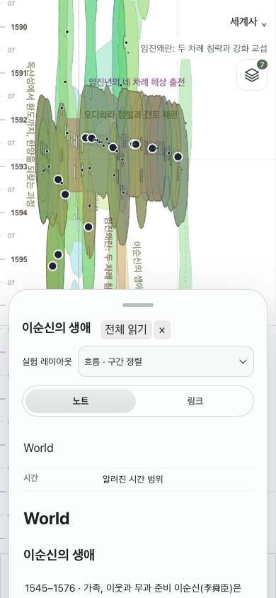
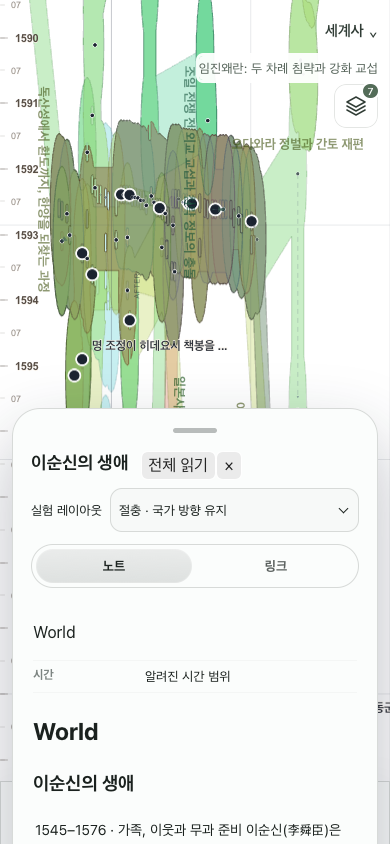
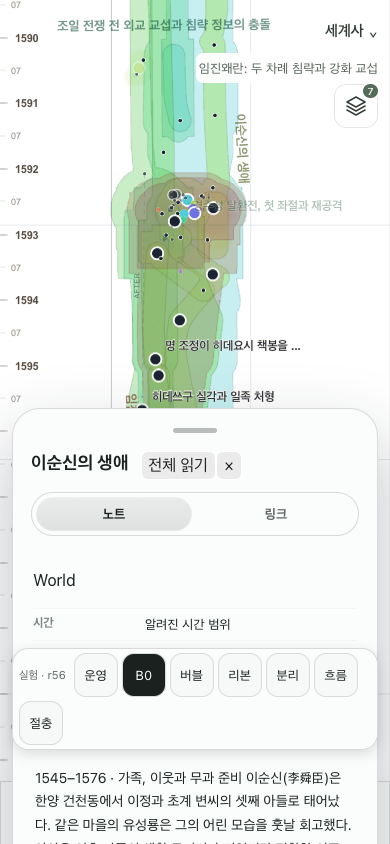
Exact SHA and terminal CI/smoke results · Full public mobile Chromium · Full public mobile WebKit